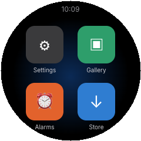
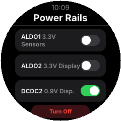

NARRTOS WEAR
Donanım ve Board Varyantları
NARRTOS WEARDökümantasyon Serisi
NARRTOS WEAR
Donanım ve Board Varyantları
Desteklenen kartlar, pin haritası, sürücüler, varyant kalıbı ve yeni bir karta taşıma.





Desteklenen kartlar
- Varsayılan ortam esp32s3_wearable: ESP32-S3R8 işlemci, 8 MB flash ve 8 MB Octal PSRAM, 410×502 CO5300 AMOLED ekran, FT3168 dokunmatik, AXP2101 PMIC, PCF85063 RTC ve ICM42670 IMU.
- İkinci ortam esp32s3_lcd128: ESP32-S3 işlemci, 16 MB flash ve 2 MB Quad PSRAM, 240×240 yuvarlak GC9A01A LCD, CST816S dokunmatik. PMIC yoktur; 3,3 volt doğrudan beslenir.
İki kart tek kod tabanını kullanır. Fark yalnızca derleme ortamında seçilir.
Pin haritası (varsayılan kart)
#define PIN_DISP_CS 12 // QSPI ekran #define PIN_DISP_SCLK 11 #define PIN_DISP_D0 4 // D0..D3 = 4/5/6/7 #define PIN_DISP_RST 8 #define PIN_I2C_SDA 15 // paylaşımlı I2C: dokunmatik + #define PIN_I2C_SCL 14 // PMIC + RTC + IMU #define PIN_TOUCH_RST 9 #define PIN_TOUCH_INT 38 #define PIN_BTN_TOP 0 // aktif LOW (boot butonu) #define PIN_BTN_BOTTOM 10 #define PIN_BUZZER 21 // SD (SDMMC): D0=3, CMD=1, CLK=2
Pin tanımları kodda tek bir yerde, core/os_config.h dosyasında yaşar. Bütün sürücüler buradan okur.
LCD varyantının pinleri ayrı bir başlık dosyasındadır: core/os_config_lcd128_pins.h. Varyant derlemesinde otomatik seçilir.
Sürücüler (src/drivers/)
- display/co5300: QSPI üzerinden sürülen CO5300 AMOLED, varsayılan ekrandır. Parlaklık panel komutuyla ayarlanır.
- display/gc9a01_128: SPI ve DC hattıyla sürülen GC9A01A LCD, 1,28 inç varyantın ekranıdır. Parlaklık arka ışığın LEDC PWM'iyle ayarlanır.
- touch/ft3168 varsayılan dokunmatik, touch/cst816s_128 ise 1,28 inç varyantın dokunmatiğidir; ikisi de I2C kullanır.
- power/axp2101 güç raylarını, batarya ölçümünü ve şarjı yönetir (I2C).
- rtc/pcf85063 gerçek zaman saatidir; güç kesilse de saat korunur (I2C).
- imu/icm42670 ivme ve jiroskop sensörüdür; adım sayar ve jestler için kullanılır (I2C).
Dokunmatik, PMIC, RTC ve IMU aynı I2C veriyolunu paylaşır.
Varyant kalıbı: aynı sembol seti
// gc9a01_128_driver.cpp #ifdef DISPLAY_VARIANT_LCD128 // yalnız LCD varyantında derlenir ... co5300_init(), co5300_lvgl_flush_cb(), ... // aynı isimler #endif // co5300_driver.cpp'deki guard, LCD build'ında onu boşaltır -> // linker her ortamda TEK sembol seti görür; // main.cpp / ui_service DEĞİŞMEZ.
Alternatif ekran sürücüleri, varsayılan sürücüyle birebir aynı fonksiyon imzalarını dışa verir.
Bunların tamamı kendi derleme koruması içindedir. Bağlayıcı her ortamda tek bir sembol seti görür; üst katmanlar değişmez.
Yeni karta taşıma (porting)
- 1. Ekran sürücüsü: aynı fonksiyon setini kendi koruması içinde yazın. Çözünürlük CO5300_H_RES ve V_RES bayraklarından gelir.
- 2. Dokunmatik sürücüsü: aynı kalıp, aynı imzalar ve kendi koruması.
- 3. Pin haritası: core/os_config_<yeni>_pins.h dosyası; os_config.h kart korumasına göre doğru dosyayı seçer.
- 4. Derleme ortamı: platformio.ini içinde varsayılandan miras alan yeni bir ortam.
- 5. ESP-IDF yapılandırması: PSRAM tipi ve flash boyutu için sdkconfig.esp32s3_yeniboard dosyası.
- 6. Arayüz ölçü sabitleri: Uygulama Geliştirme dökümanının Çözünürlük uyumu bölümü.
Bu, gerçekten yapılmış bir taşımanın (1,28 inç yuvarlak LCD) izlediği yoldur.
Build ortamı örneği
[env:esp32s3_yeniboard]
extends = env:esp32s3_wearable ; ortak her şeyi miras al
board_build.flash_size = 16MB ; donanıma göre
board_build.psram_type = qio
upload_speed = 460800 ; USB köprüsü kararsızsa düşür
build_flags =
${env:esp32s3_wearable.build_flags}
-DCO5300_H_RES=240 -DCO5300_V_RES=240
-DDISPLAY_VARIANT_YENI=1
-DBOARD_VARIANT_YENI=1Yeni ortam varsayılan ortamı extends ile miras alır. Yalnızca donanıma özgü değerler ve varyant bayrakları eklenir.
Kontrol listesi
- Ekran ve dokunmatik sürücü çifti aynı sembol setiyle, kendi koruması içinde yazıldı.
- Pin başlığı, platformio ortamı ve sdkconfig dosyası eklendi.
- Her iki ortam da derleniyor ve varsayılan derlemenin çıktısı değişmedi.
- Açılış günlükleri temiz; dokunmatik, ekran ve servisler cihaz üzerinde doğrulandı.
Değişmezlik kuralı: yeni kodun tamamı koruma içinde kalır, varsayılan dal orijinal değerlerini korur.
Yuvarlak panelde aynı sistem
Aynı kod tabanı, yalnızca derleme zamanındaki seçimle yuvarlak GC9A01A panelde çalışır.
Yerleşim yazılımdan gelir: içerik sütunu 204 piksel, ana listede satır adımı 60, güç raylarında 50, ana menü hücresi 88×92 piksel.
Kısıt şudur: 204 piksellik bir satır ancak yaklaşık 180. piksele kadar dairenin içinde kalır. Bu yüzden ana listede aynı anda iki satır tam görünür.
Yuvarlak panel ekranları
Dijital kadranRubik Black 100 Ayarlariçerik 204 px, STEP 60
Ayarlariçerik 204 px, STEP 60
Güç raylarıSTEP 50Adım sayarhedef halkasıHava durumutek şehir240×240 yuvarlak varyantın ekranları. Ölçüler varyant bloğundan gelir.
NARRTOS WEAR
Varyant eklemek mevcut donanımın derlemesini etkilemez.
Ölçü sabitleri ve çözünürlük uyumu için Uygulama Geliştirme dökümanına bakın. corezzle.com
İzlediğiniz için teşekkürler
Sıradaki videoSıradaki video
Oynatma listesiOynatma listesi
Abone olunYeni bölümlerden haberdar olun
corezzle.com · github.com/corezzle/NarRTOS-Wear